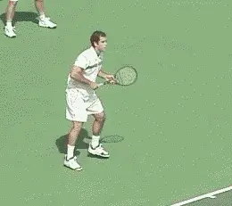
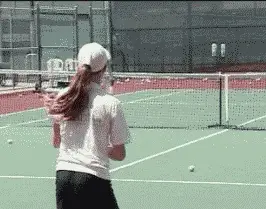
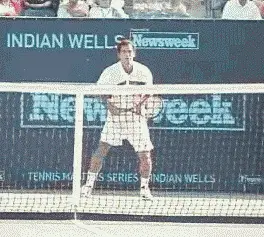
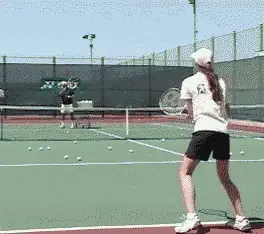
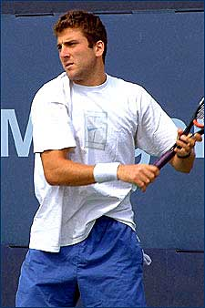
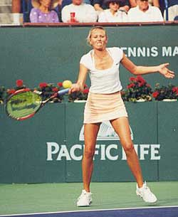
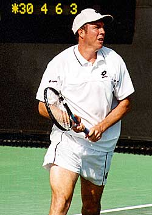
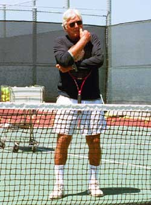
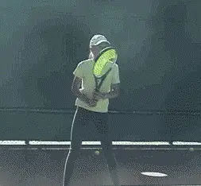

Discipline¶
Discipline¶
Robert Lansdorp¶
Discipline. That almost sounds like an old-fashioned word today, like something negative. Nowadays, everybody has to be politically correct, and so there is less and less discipline, and sometimes none at all.

Discipline was the key to developing Pete's forehand-and the strokes of every player I've worked with.
Parents, especially today, are so into the concept of positive reinforcement, "Let's always be positive!" And I think that's good. That should be the role of the parent.
But what they don't see is that the kid never accomplishes anything. The kid may be very "positive" but he's never going to be a tennis player if he isn't disciplined and taught to go from Step 1 to Step 2.
That's where I come in. I'm the one who gives them a reality check.
I put a lot of effort into discipline because I know how important it is. When I worked with players like Tracy Austin and Pete Sampras at a young age, I was very tough. The discipline was intense.
I'm sure Tracy, Pete and maybe a lot of other players I could mention hated me at times. Tracy in particular thought I was very tough. But later, they both acknowledged that they wouldn't have become the same players without my help.
They had to hit the ball the right way and they had to do it over and over. We don't just do it once. We do it 20 times. And then we do it 40 times. That's the way it is. The discipline of repetition is the key to success.
If you want to be a tennis player, you can't afford to make unforced errors. You have to be able to swing, hit the ball hard, and know that it's going in the court. The only way to develop that is repetition.
Today, a lot of people think that I am being tough on the children. At times, I think that is part of a huge problem that parents don't realize.
The problem is that it is very difficult for their children to concentrate on anything. The problem is much bigger than tennis, of course. It's the society of everything going fast. Kids have computers, they have video games, they have cable television with a hundred channels to click between. They don't read that much anymore.
They don't have to concentrate on one thing. Everything switches constantly. Kids have problems following sequences. They take a few steps and then they forget step one. Unfortunately, kids will never become great players with that mentality.
In the other articles I've done on TennisPlayer, I've gone into a lot of detail about the strokes. I've talked about the contact point, the balance of the body, the posture, the feet, hitting the ball on the rise, the follow-through.
Click to hear Robert Lansdorp on the problem of developing discipline.
It's one thing to have a theory about how to hit the ball, but another thing to get players to do it consistently. Just asking the kid to do it is almost never enough. That's where the discipline comes in. You have to demand it.
I'll say to the kid, "Listen, you are going to hit 20 forehands and they are all going to be exactly right. I know you can do it, and I'm not kidding around with you."
"If you miss one ball, I'm going to give you 20 more balls at the baseline." What I mean by "20 at the baseline" is that is I'm going to give the kid 20 running balls, and they are going to be a lot tougher than the ones he's hitting now.
"You think, you're tired now? After you take 20 at the baseline, you might be puking."
And I know what the kid is thinking to himself: "Wow, I don't want that!"
Now the kid is scared not to concentrate. As soon as the threat is there, suddenly the kid will do 20 perfect forehands.
I know that doesn't sound fashionable or politically correct. And if the parents are sitting there, they watch this and they just can't believe it. They cannot believe that all of a sudden, the kid is making the motion the way he's supposed to.
But then I expand it. Now I want him to do 30, and then 40. Little by little I actually force the concentration on him.
"I want the same follow through," I tell him. And I start to move him a little bit more. And over time you get the balance, you get the footwork. Why do you think Pete Sampras hits his forehand so well on the run? Because he hit thousands and thousands of them as a kid.
So it's not just how to hit the ball, it's a combination. It's the technique, it's the discipline, it's the work ethic. It's that whole combination that creates a tennis player, and maybe if you're really lucky, a champion.

Basically there is only one zone to hit; hard, crosscourt, and deep.
Zoning
One part of the discipline of becoming a player that is really overlooked is what I call "zoning." Nobody knows what it is, nobody ever talks about it. But it's a critical part of learning how to hit the ball well, how to hit through the ball and how to penetrate the court.
To me the best ball is a ball that goes about two feet above the net. If you hit through the ball, you can crank it about two feet above the net, and it goes in hard and deep.
The problem is so many coaches want players to hit higher over the net with heavy topspin. And once you go higher, it is more difficult to hit with power later on.
Basically, there is a zone over the net for every ball. For example, if I'm in the forehand corner, and I hit a hard, deep crosscourt, the ball will go about 2 feet over the net and cross the net a few inches to the left of the strap. That's what I want my players to do.
So discipline isn't just about the technical stroke. It's about where they hit it in the court and the zone that it travels in over the net. Watch Pete or Lindsay Davenport and you'll see what I mean. The right height over the net is a big key to being about to hit winners.
I work with targets a lot to develop the zone. I had a stand made that I can adjust. I put a couple of tennis ball cans on it and set it out about two feet above the net, and about three inches to the left of the strap. And I tell you, if you hit the ball there, it'll go right in the corner, fast. That's the only zone that'll lead to that shot.
If it goes higher, it'll go out. There's a huge relation between power and the level of the ball over the net. A huge relation! And the great guys can hit it hard and low. The not-so-great guys can't and that's why they hit the ball in the net, or high with topspin.
Often the first thing you hear somebody say to a kid, is, "Give yourself a little bit more margin over the net. Go higher over the net." This is fine for recreational players. But it won't work if you want to develop a lot of power.

Go high over the net and you can forget hitting hard.
You go higher over the net, you can forget hitting it hard. You have to hit it soft, or put more top spin on it. It's not the same ball. The top guys, when they hit the ball, the ball goes low over the net and they don't miss.
I had a young woman player come to me. She thought she was good enough to play on the tour, but she said she had one problem. "You know Robert, I don't seem to be able to put the ball away."
So we hit some balls, and I asked her to hit a couple of cross-courts. The girl was hitting the ball six feet over the net, at least, maybe higher.
Then I said, why don't you go down the line? She starts hitting the ball a foot higher over the net! Now she's going eight feet over the net down the line.
So I ask her "Why are you going that much higher over the net down the line?" And she answers, "Well isn't the net higher down the line?"
And I stood there, and I thought to myself, I cannot believe what I am hearing. I just cannot believe this girl thinks she's going to play the tour when this is what her concept is. Of course, you can never put a ball away when you go seven or eight feet over the net.

Going down the line, the ball still has to travel low over the net to be a winner.
And you look at the pros. The pros don't hit the ball in the net that often. But they don't hit the ball that high, either. Because they have a range where they know they can hit the ball. They know how to find the zone.
That's why I work so much with targets with my kids, to develop a feel for the zones.
Almost every player has experienced the power of targets. For example, you're playing someone that doesn't seem to hit the ball that well, but then you go up to the net and he rips it by you. And you think, "where did that come from?"
The answer is you gave him a target. That's what I'm doing in reverse. I put the target down, and say, "Okay, let's aim at the target." "Let's actually develop the zone."
Most kids can hit it one, two, maybe three targets out of ten. But if you can't hit the target, then you can't hit your ball in the zone, it's as simple as that.
Some of the kids love it. I have a funny story, about Justin Gimelstob when he was in the juniors. Just before he went to Kalamazoo and won the national 18s, he had a lesson. At the end of the lesson, I said, "Okay, let's hit some targets."

Justin Gimelstob set a record for backhand targets, then won the junior nationals.
So, on his one-handed backhand, the guy hits the can eight out of 10 times. It was just phenomenal. His aim was so good that he'd just swing and know exactly where the zone was.
So I told him "If you cannot win Kalamazoo now, forget it." And he went and won Kalamazoo.
Some people find the targets create a little pressure and they might not like it, at least at first. Maria Sharapova, a young Russian pro I've worked with for several years, couldn't do it at all when she first came to me, not even close.
But over the course of a couple of years, she worked her way up until she hit the target eight times out of ten. She got such a challenge out of doing it, she started asking for the targets, because she wanted to hit 9 out 10. That's the way you want to look at it.
The discipline the kid gets in the lesson is very important. You need to have a lot of discipline to develop the strokes and to develop the zones.
If a kid has a concentration problem, it's not going to help just to "ask" the kid to do it right. If you just let it go and act like everything is fine, the kid is never going to concentrate.
Little by little by little you force the concentration on them. You move them a little bit and then you move them a little bit more. The bottom line is, if you demand concentration, the kid's concentration will improve.
But that doesn't mean lessons every day make kids into tennis players. That's something a lot of parents don't understand. A lot of parents want their kid to have a lesson everyday. They think a lot lessons is a good thing. I think it's a bad thing, and I'll tell you why.
It makes the student stale. The kid doesn't think any more. He doesn't think any more about what he has to do, because the coach is doing it for him.

It took Russian phenom Maria Sharapova a period of years to develop her hitting zones.
You can name every single top player I worked with Sampras, Tracy Austin, Lindsay Davenport, Jeff Tarango, and about 20 others who were world class pros, and none of them had more than one lesson a week, occasionally two.
The only exception is when somebody comes from out of town, then you probably have to go every day because you won't see them again for a long time. But if the player lives in the area, it's completely ridiculous to see the coach every day.
I am very tough on kids, but I also believe that ultimately the kid has to do it for himself. I'm there to give them the way to hit the ball. I want the kid to show me he can do it 10 times in a row. Then I tell them, "Look when you come back next time, the first ball better look the same way."
But then it's up to the kid. So now the kid will go and the kid will actually think about it and work it. Because sometimes it takes time to internalize, to get it in the system, to get a feel for it, to know what it is like. But if you just force feed them, it's different. You have to let the person figure it out, let them get a feel for it.
A great example was Jeff Tarango. I have a lot of respect for what he did, because as a kid he did not have a huge amount of talent. But he would have a lesson, he'd listen, he was very intelligent. He'd work on it because he had to.
He'd go out with his mother who would feed balls, and he'd work for an hour or two hours - the same shot over and over, until he finally had one of the best forehands in the game.

Jeff worked very hard to internalize what I taught him and developed a great forehand.
I love the development process. I love to work with a kid and then see him two months later and see a little improvement. Another year later, you see more improvement. I love to make the kid better. I even enjoy working with adults for the same reason. I treat them like juniors. I know I can actually make them better.
I've always had very good kids, but I've also had kids that were not going to be great. Sometimes I have kids that have almost given up on the game, and then they come to me and as supposedly tough as I am, I actually turn some of them around.
All of a sudden, they become enthusiastic, and they play and they've got confidence. They have the confidence that I am willing to spend time with them. How is that possible? I thought he only takes champions. And I take anybody, basically. It doesn't make any difference. I don't seek out the great kids. When a parent calls me, my first instinct is usually, "Sure I'll try to help your kid."
I love the interaction with the kid. That's why I don't have a huge academy. It's just me and the kid. That's why I'm still doing it. A kid on the other side hits me one ball and I know exactly what the kid's about.
Yes, sometimes it's an act. Sometimes it's funny. I can be a great actor, I won't deny it. The kid can hit one ball. And I take my racquet and I'll walk over to the other side of the net, and walk right up to him and say "What the hell are you doing?"
And the kid's mind is probably racing. He's wondering what the hell is happening. But he is so full of attention, he's just like putty in my hands. Some people might say I'm intimidating, but I show the kids respect.
I'm just very strict and I expect the kid to do exactly what I want him to do, and I won't put up with any attitude.

I can be a great actor, but I show kids respect.
If he doesn't really try, then I'll just end the lesson. I'll actually tell the kid to leave, to get off the court. It's not worth it. I don't need the business that badly. It's not good for the kid either.
Here's a funny story I still remember even though it happened about 20 years ago. A wealthy tennis father in Texas called me up and said he'd like to send his 13-year old son out for a week to work with me. And I said, sure, send him out.
So the kid flies out, and in his first lesson I see he's not a bad player, but a little overweight and maybe a little out of shape.
After about 20 minutes, I said, "Okay let's hit some wide forehands and backhands." So I hit him 10 or 15 wide forehands. Then we start on the backhands. After about 5 forehands he missed a ball. And he just stops dead in his tracks and starts swearing. "Goddamn it!" And then he throws his racket down.
So I said: "Hey, you see that gate over there?" "Get off this court and go back to Texas." I threw him out.
The guy came all the way from Texas, and after 20 minutes with me, I threw him out. I was not going to take that kind attitude from a 13-year old, who missed just one ball.
And so the kid leaves the court. He actually goes back to Texas. The next day the phone rings and it's the father. And I thought to myself, "OK Robert, be ready, because this guy is going to rip you to shreds."
But instead, he says "Mr. Lansdorp, let me thank you very much for the way you handled my son and I really appreciate it. And if you ever have kids that come to Texas, we have a big house and please feel free to call, because they're welcome to stay in my house."
Now if that had happened today, most coaches would just ignored it and said something like "Come on now, it's OK, just relax and try a little harder." That's probably how other coaches have always treated that kid from Texas.
Video demonstration — the original video for this article was hosted on TennisPlayer.net.
Click photo to hear Robert Lansdorp talk about how long it really takes to develop discipline.
But some tennis parents on the other hand always think they know better. That's probably true in most sports. Take it from me, I know because my son plays little league.
They actually like to tell you how the kid should hit the ball. Sure they seek advice, but a lot of parents will only take the advice that they think is correct.
Parents will always try to do the best for their kids, I give them that much credit. They don't purposefully try to screw them up. But so many times, what they end of doing has the exact opposite effect they intend.
Here's another story. I had a kid whose father constantly told him where to hit the ball. He couldn't keep his mouth shut. It was almost like the father was playing the matches, like he thought he was mentally playing the matches for his kid. The kid never really got the chance to think about the game himself. He never had the chance to get a feel for what to hit. When you play, you have a lot better feel for what to do than anyone sitting there watching. It's an instinct the player has. If you don't allow the player to develop instincts, you are holding him back.
This boy never had a feeling like he played. If he lost it was because he didn't listen and if he won it was because he listened to his smart father. I told the father early on, "You ought to let your son play. Don't go watch your son's practice matches. Let him do his thing. Let him learn from his own mistakes."
I had another student once, who wasn't that good, but he started getting better. All of a sudden, the mom starts talking differently, saying "we" this and "we" that. Where did she get this concept? The parent never even picked up a racket.

If you start kids my way, they'll hit the ball well for the rest of their lives.
It's pretty common to hear that. It's always "we" won but "he" lost. You'll never hear a parent saying "we lost and we played very stupidly."
The kid walks onto my court and the parent is carrying the bag. That's a telltale sign. Do they think that's going to make the kid a champion?
I think the first time kids hit balls, if you get them to do it the right way, they will do it that way for the rest of their lives. Kids need to be disciplined.
That's why it's very important for parents to start the kid out right and get good coaching from the beginning. Parents often make a mistake starting their kid with someone who's not experienced with the game just to save money. This can cause problems later in the development process, particularly if the kid starts with an extreme grip.
They also need to incorporate what they learn for themselves. I'm telling you if you start out the kids the way I start them out, in the long run, you have a hell of a shot versus any other way. It's a simple thing and it's a proven fact.

Robert Lansdorp is the legendary Southern California coach who has developed dozens of world class junior and professional players. Robert's players include 4 champions who have gone on to become number one in the world: Maria Sharapova, Pete Sampras, Lindsay Davenport, and Tracy Austin. In these articles, found exclusively on Tennisplayer, Robert share his views on what goes into the making of a champion, and how he developed the strokes of some of the best ball strikers in the history of tennis.